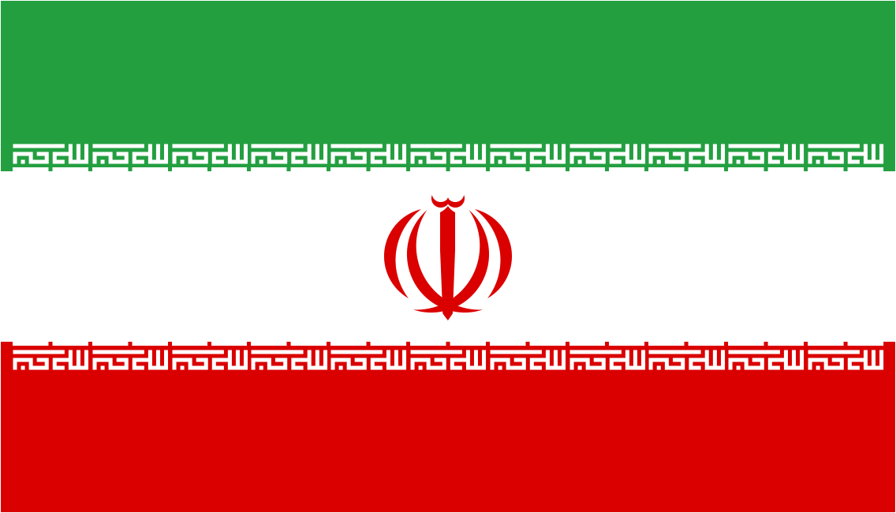

이란
- 이란과 이스라엘의 관계
- 이란
- 이스라엘
소목차
개요
서아시아의 이슬람 공화국으로 수도는 테헤란(تهران, Tehran)이다.
종교 국가로서 국교는 시아파 이슬람이며,
정치 체계는 최고 지도자인 라흐바르의 하위에 명목상으로 삼권분립이 되어있다.
그리고 이슬람 근본주의 국가로서 샤리아(이슬람 율법)에 준한 법률 체계를 가지고 있다.
또한 이란 헌법에는 시아파의 마흐디[10]가 재림할 경우, 마흐디에게 국가통치권을 양도한다는 구절이 있다.
국호
정식 국호는 이란 회교 공화국[11] 또는 이란 이슬람 공화국[12](جمهوری اسلامی ایران / Jomhuri-ye Eslāmi-ye Irān)이다.
'이란(ایران / Irān)'의 유래는 초기 인도이란조어로 '아리아인'을 뜻하는 '아리아스(*Áryas)'이다.
